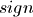

Doing a high-precision calculation in mpmath typically just amounts to setting the precision and entering a formula. However, some more details of mpmath’s terminology and internal number model can be useful to avoid common errors, and is recommended for trying more advanced calculations.
Mpmath uses binary arithmetic. A binary floating-point number is a number of the form man * 2^exp where both man (the mantissa) and exp (the exponent) are integers. Some examples of floating-point numbers are given in the following table.
Number Mantissa Exponent 3 3 0 10 5 1 -16 -1 4 1.25 5 -2
The representation as defined so far is not unique; one can always multiply the mantissa by 2 and subtract 1 from the exponent with no change in the numerical value. In mpmath, numbers are always normalized so that man is an odd number, with the exception of zero which is always taken to have man = exp = 0. With these conventions, every representable number has a unique representation. (Mpmath does not currently distinguish between positive and negative zero.)
Simple mathematical operations are now easy to define. Due to uniqueness, equality testing of two numbers simply amounts to separately checking equality of the mantissas and the exponents. Multiplication of nonzero numbers is straightforward: (m*2^e) * (n*2^f) = (m*n) * 2^(e+f). Addition is a bit more involved: we first need to multiply the mantissa of one of the operands by a suitable power of 2 to obtain equal exponents.
More technically, mpmath represents a floating-point number as a 4-tuple (sign, man, exp, bc) where  is 0 or 1 (indicating positive vs negative) and the mantissa is nonnegative; bc (bitcount) is the size of the absolute value of the mantissa as measured in bits. Though redundant, keeping a separate sign field and explicitly keeping track of the bitcount significantly speeds up arithmetic (the bitcount, especially, is frequently needed but slow to compute from scratch due to the lack of a Python built-in function for the purpose).
The special numbers +inf, -inf and nan are represented internally by a zero mantissa and a nonzero exponent.
For further details on how the arithmetic is implemented, refer to the mpmath source code. The basic arithmetic operations are found in the lib.py module; many functions there are commented extensively.
Contrary to popular superstition, floating-point numbers do not come with an inherent “small uncertainty”. Every binary floating-point number is an exact rational number. With arbitrary-precision integers used for the mantissa and exponent, floating-point numbers can be added, subtracted and multiplied exactly. In particular, integers and integer multiples of 1/2, 1/4, 1/8, 1/16, etc. can be represented, added and multiplied exactly in binary floating-point.
The reason why floating-point arithmetic is generally approximate is that we set a limit to the size of the mantissa for efficiency reasons. The maximum allowed width (bitcount) of the mantissa is called the precision or prec for short. Sums and products are exact as long as the absolute value of the mantissa is smaller than 2^prec. As soon as the mantissa becomes larger than this threshold, we truncate it to have at most prec bits (the exponent is incremented accordingly to preserve the magnitude of the number), and it is this operation that typically introduces numerical errors. Division is also not generally exact; although we can add and multiply exactly by setting the precision high enough, no precision is high enough to represent for example 1/3 exactly (the same obviously applies for roots, trigonometric functions, etc).
Mpmath uses binary arithmetic internally, while most interaction with the user is done via the decimal number system. Translating between binary and decimal numbers is a somewhat subtle matter; many Python novices run into the following “bug” (addressed in the General Python FAQ):
>>> 0.1
0.10000000000000001
Decimal fractions fall into the category of numbers that generally cannot be represented exactly in binary floating-point form. For example, none of the numbers 0.1, 0.01, 0.001 has an exact representation as a binary floating-point number. Although mpmath can approximate decimal fractions with any accuracy, it does not solve this problem for all uses; users who need exact decimal fractions should look at the decimal module in Python’s standard library (or perhaps use fractions, which are much faster).
With prec bits of precision, an arbitrary number can be approximated to within 2^(-prec). With dps decimal digits, the corresponding error is 10^(-dps). The equivalent values for prec and dps are therefore related proportionally via the factor C = log(10)/log(2), or roughly 3.32. For example, the standard (binary) precision in mpmath is 53 bits, which corresponds to a decimal precision of 15.95 digits.
More precisely, mpmath uses the following formulas to translate between prec and dps:
dps(prec) = max(1, int(round(int(prec) / C - 1)))
prec(dps) = max(1, int(round((int(dps) + 1) * C)))
Note that the dps is set 1 decimal digit lower than the corresponding binary precision. This is done to hide minor rounding errors and artifacts resulting from binary-decimal conversion. As a result, mpmath interprets 53 bits as giving 15 digits of decimal precision, not 16.
The dps value controls the number of digits to display when printing numbers with str, while the decimal precision used by repr is set two or three digits higher. For example, with 15 dps we have:
>>> from mpmath import *
>>> mp.dps = 15
>>> str(pi)
'3.14159265358979'
>>> repr(+pi)
"mpf('3.1415926535897931')"
The extra digits in the output from repr ensure that x == eval(repr(x)) holds, i.e. that numbers can be converted to strings and back losslessly.
It should be noted that precision and accuracy do not always correlate when translating from binary to decimal. As a simple example, the number 0.1 has a decimal precision of 1 digit but is an infinitely accurate representation of 1/10. Conversely, the number 2^(-50) has a binary representation with 1 bit of precision that is infinitely accurate; the same number can actually be represented exactly as a decimal, but doing so requires 35 significant digits:
0.00000000000000088817841970012523233890533447265625
In fact, all binary floating-point numbers can be represented exactly as decimals (despite the converse not being true), but displaying more than dps digits is usually not useful, since typically only at most dps digits will be correct when the floating-point number is an approximation for some computed quantity.
There are several different strategies for rounding a too large mantissa or a result that cannot at all be represented exactly in binary floating-point form (such as 1/3 or log(2)). Mpmath supports the following rounding modes:
Name Direction Floor Towards negative infinity Ceiling Towards positive infinity Down Towards 0 Up Away from 0 Nearest To nearest; to the nearest even number on a tie
The first four modes are called directed rounding schemes and are useful for implementing interval arithmetic; they are also fast. Rounding to nearest, which mpmath uses by default, is the slowest but most accurate method. Directed rounding is currently only available via interval arithmetic or via the interface in the libmpf module.
The arithmetic operations +, -, * and / acting on real floating-point numbers always round their results correctly in mpmath; that is, they are guaranteed to give exact results when possible, they always round in the intended direction, and they don’t round to a number farther away than necessary. Exponentiation by an integer n preserves directions but may round too far if either the mantissa or n is very large.
Evaluation of transcendental functions (as well as square roots) is generally performed by computing an approximation with finite precision slightly higher than the target precision, and rounding the result. This gives correctly rounded results with a high probability, but can be wrong in exceptional cases.
Rounding for radix conversion is a slightly tricky business. When converting to a binary floating-point number from a decimal string, mpmath writes the number as an exact fraction and performs correct rounding division if the number is of reasonable size (roughly, larger than 10^(-100) and smaller than 10^100), guaranteeing correct rounding. If the exponent is enormous, mpmath first performs a floating-point division to reduce it to a manageable size; this can produce a (tiny) rounding error.
When converting from binary to decimal, mpmath first performs an approximate radix conversion with slightly increased precision, then truncates the resulting decimal number to remove long sequences of trailing 0’s and 9’s, and finally rounds to nearest, rounding up (away from zero) on a tie. The decimal library could be used to provide more control over the rounding in the binary-to-decimal conversion, and mpmath did do radix conversions via decimal in older versions, but this was far too slow compared to using a custom algorithm.
In hardware floating-point arithmetic, the size of the exponent is restricted to a fixed range: regular Python floats have a range between roughly 10^(-300) and 10^300. Mpmath uses arbitrary precision integers for both the mantissa and the exponent, so numbers can be as large in magnitude as permitted by the computer’s memory.
Some care may be necessary when working with extremely large numbers. Although standard arithmetic operators are safe, it is for example futile to attempt to compute the exponential function of of 10^100000. Mpmath does not complain when asked to perform such a calculation, but instead chugs away on the problem to the best of its ability, assuming that computer resources are infinite. In the worst case, this will be slow and allocate a huge amount of memory; if entirely impossible Python will at some point raise OverflowError: long int too large to convert to int.
In some situations, it might be more convenient if mpmath could “round” extremely small numbers to 0 and extremely large numbers to inf, and directly raise an exception or return nan if there is no reasonable chance of finishing a computation. This option is not available, but could be implemented in the future on demand.
On most systems, Python’s float type represents an IEEE 754 double precision number, with a precision of 53 bits and rounding-to-nearest. With default precision and rounding settings, mpmath mpf numbers roughly emulate the behavior of the float type. Sources of incompatibility include the following: